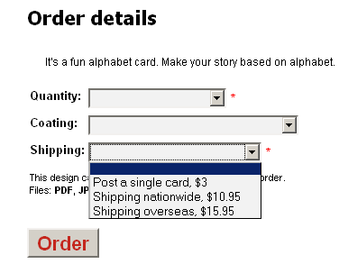

<?xml version="1.0" encoding="UTF-8"?><rss version="2.0"
	xmlns:content="http://purl.org/rss/1.0/modules/content/"
	xmlns:wfw="http://wellformedweb.org/CommentAPI/"
	xmlns:dc="http://purl.org/dc/elements/1.1/"
	xmlns:atom="http://www.w3.org/2005/Atom"
	xmlns:sy="http://purl.org/rss/1.0/modules/syndication/"
	xmlns:slash="http://purl.org/rss/1.0/modules/slash/"
	>

<channel>
	<title>delivery address &#8211; On web to print sofware, solutions and hosted services</title>
	<atom:link href="http://www.zetaprints.com/blog/tag/delivery-address/feed/" rel="self" type="application/rss+xml" />
	<link>http://www.zetaprints.com/blog</link>
	<description>From web to print and everything in between</description>
	<lastBuildDate>Fri, 02 Aug 2013 10:44:32 +0000</lastBuildDate>
	<language>en-US</language>
	<sy:updatePeriod>hourly</sy:updatePeriod>
	<sy:updateFrequency>1</sy:updateFrequency>
	<generator>https://wordpress.org/?v=4.4.1</generator>
	<item>
		<title>New web-to-print features</title>
		<link>http://www.zetaprints.com/blog/2009/03/24/new-web-to-print-features/</link>
		<comments>http://www.zetaprints.com/blog/2009/03/24/new-web-to-print-features/#respond</comments>
		<pubDate>Tue, 24 Mar 2009 13:24:32 +0000</pubDate>
		<dc:creator><![CDATA[admin]]></dc:creator>
				<category><![CDATA[web-to-print features]]></category>
		<category><![CDATA[web-to-print software]]></category>
		<category><![CDATA[delivery address]]></category>
		<category><![CDATA[options]]></category>
		<category><![CDATA[pricing]]></category>

		<guid isPermaLink="false">http://www.zetaprints.com/blog/?p=348</guid>
		<description><![CDATA[The ordering process may be a bit more streamlined now. We added a few features today. Multiple categories of options We used to have prices and options. Not any more. Now you can have up to 5 groups of options with whatever labels you need. Simply insert a line starting with ==. E.g. ==Shipping or [&#8230;]]]></description>
				<content:encoded><![CDATA[<p>The ordering process may be a bit more streamlined now. We added a few features today.</p>
<h2>Multiple categories of options</h2>
<p>We used to have prices and options. <a title="Advanced web-to-print options" href="../../../../help/advanced-product-options/">Not any more. </a></p>
<p>Now you can have up to 5 groups of options with whatever labels you need. Simply insert a line starting with ==. E.g. ==Shipping or ==Coating</p>
<h3>Example for Optional Features text box</h3>
<p><em>==Coating</em></p>
<p><em>Front side lamination, add [10%]<br />
Double-sided lamination, add [15%]<br />
==Shipping<br />
Post a single card, $[3]<br />
Shipping nationwide, $[10.95]<br />
Shipping overseas, $[15.95]</em></p>
<p>It produces 2 groups:  <em>Coating </em>and <em>Shipping</em>. <em>Coating group</em> is optional because it has an empty line. The user will have to choose one of the shipping options to place the order because there are no empty lines. Both groups become part of the order form.</p>
<div style="width: 386px" class="wp-caption alignnone"><p class="wp-caption-text">Web-to-print order form</p></div>
<h2>New pricing and discount structure</h2>
<p>Discount can be calculated on top of a subtotal</p>
<ul>
<li><strong>[++20%] </strong>instructs your <em>web-to-print system</em> to add 20% to the subtotal so far.</li>
<li><strong>[&#8211;20%]</strong> instructs your <em>web-to-print system</em> to take 20% from the subtotal so far.</li>
</ul>
<p>or on top of the base price</p>
<ul>
<li><strong>[20%]</strong> instructs your <em>web-to-print system</em> to add 20% to the base price.</li>
<li><strong>[-20%]</strong> instructs your <em>web-to-print system</em> to take 20% from the base price.</li>
</ul>
<p>Read more in <a title="Permanent Link: Advanced product options" rel="bookmark" href="../../../../help/advanced-product-options/">Advanced product options.</a></p>
<h2>Delivery address control</h2>
<p>You can use [-d] and [d] indicators in price lines to <a title="web to print delivery" href="../../../../help/delivery-address-control/">control delivery address input box</a>. E.g. you can hide it for download only options.</p>
<ul>
<li>$[2] to download and print at home [-d]</li>
<li>$[10] for 10 copies [d]</li>
<li>$[20] for 50 copies [d]</li>
</ul>
<p>Choosing option 1 hide delivery address text box, choosing any other option brings it back.</p>
]]></content:encoded>
			<wfw:commentRss>http://www.zetaprints.com/blog/2009/03/24/new-web-to-print-features/feed/</wfw:commentRss>
		<slash:comments>0</slash:comments>
		</item>
	</channel>
</rss>

<!-- Localized -->